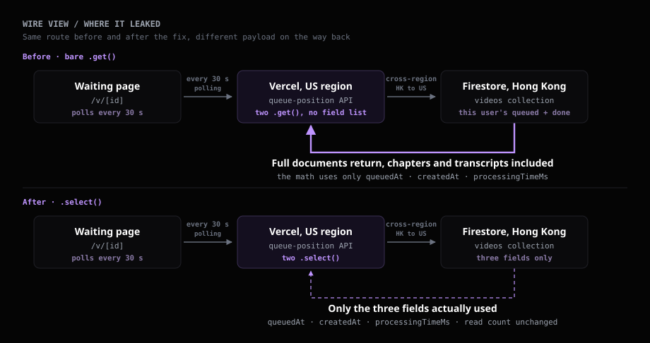
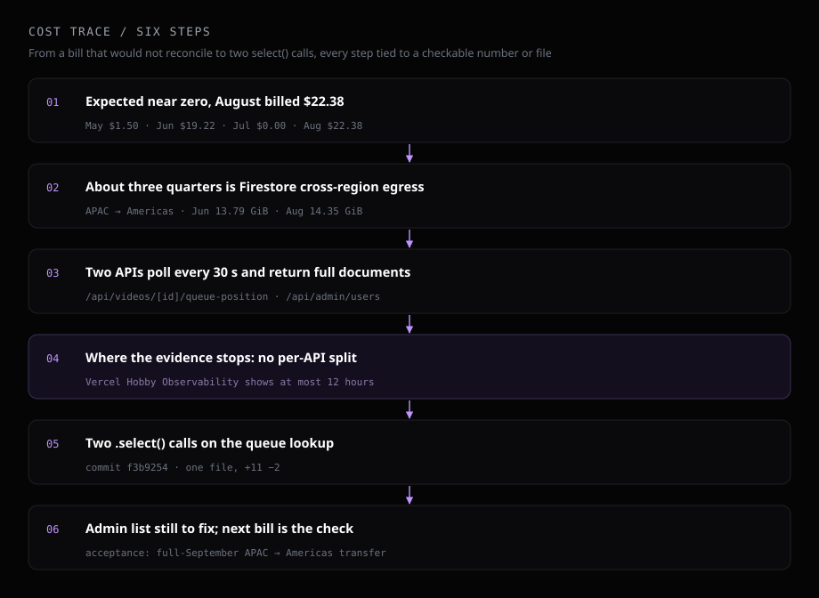

yt-digest is a service I maintain: you hand it a YouTube video, it hands back a summary report. The heavy processing runs on a local daemon, and the cloud side holds a Next.js frontend, Firestore, Cloud Storage and a few APIs, so I expected the monthly cloud bill to sit near zero. The Google Cloud billing report said otherwise: June $19.22, August $22.38, July $0.00. This is how I worked back from the usage on that report, how far the evidence goes, and where it stops.
# I expected zero, the report said $22.38
I exported the March–September billing report as CSV, grouped by month and SKU. Beyond the charge, I watched two usage numbers: data Firestore sent to the Americas, and read operations. The Firestore database was created on May 15, so May covers only half a month.
| Month | Charge | To Americas | Reads |
|---|---|---|---|
| May | $1.50 | 7.52 GiB | 465,255 |
| June | $19.22 | 13.79 GiB | 755,628 |
| July | $0.00 | 1.91 GiB | 416,134 |
| August | $22.38 | 14.35 GiB | 712,176 |
Both billed months sent more than 13 GiB to the Americas; July dropped to 1.91 GiB, roughly a seventh of August, and the bill went to zero. The charge tracks transfer volume, and that is the only relationship the table shows directly.
# The charge has a name: data transfer
With the SKUs laid out, only two items carry a charge. Writes, deletes, storage and Cloud Storage all read $0.00:
| SKU | June | August |
|---|---|---|
| Cloud Firestore Internet Data Transfer Out from APAC to the Americas | $14.27 | $16.91 |
| Cloud Firestore Read Ops Hong Kong | $4.95 | $5.47 |
Cross-region transfer is 74.2% of June and 75.6% of August; the rest is read operations. Both items list App Engine in the service column, and Firestore appears only inside the SKU name, so grouping by service alone points at the wrong place.
The transfer route comes from the architecture. The Firestore database is located in Hong Kong (asia-east2); the APIs run on Vercel, and the X-Vercel-Id response header shows the executing region as iad1, on the US east coast. Firebase's pricing page states that requests between Google Cloud regions carry additional internet egress charges.
So the question narrowed to one sentence: which APIs repeatedly pull large amounts of data from Hong Kong into the US?
# Two APIs in the code poll every 30 seconds
Searching the repo for setInterval turns up four places that call an API every 30 seconds. Two of them hit /api/daemon-status, which reads a single system/daemon document per call; the other two pull whole batches of documents with .get() and bring them back in full. Both run on Vercel and both query the Hong Kong Firestore.
The first is the waiting page's queue lookup. After submitting a video, the user waits on /v/[id], which calls /api/videos/[id]/queue-position through setInterval(fetchPos, 30_000), polling only while the video's status is queued. Each call reads the user's users/{uid}/videos three times:
- The target video itself, for its queue timestamp.
- Every video with
status == "queued", to count how many sit ahead. - Every video with
status == "done", sorted by processing time from longest to shortest, with the top 10 averaged.
The math uses only queuedAt, createdAt and processingTimeMs. A video document also stores chapters, the original transcript and the Chinese transcript, and those fields crossed regions every 30 seconds; the more videos a user finishes, the more the third query carries.
The second is the admin user list. The /admin page calls /api/admin/users through setInterval(loadAll, 30000). That API reads every user, then pulls each user's done and failed videos, also as full-document .get() calls. Its only polling condition is an open admin tab.

# Where the evidence stops
Both APIs fit "pull full documents from Hong Kong into the US every 30 seconds", but which one moved the 14 GiB in June and August cannot be separated today.
Separating them needs per-API call counts for June and August. I looked in Vercel Observability: the project is on the Hobby plan, the longest time range available is "Last 12 hours", and longer ranges require an upgrade. Call records from two months ago are gone.
One more line in the report does not fit. Firestore transfer within APAC went from 1.99 GiB in July to 7.68 GiB in August, more than threefold. That traffic does not travel the Vercel US route, neither polling API explains it, and it was not billed, so this post does not chase it.

# Fixing the queue lookup first
Firestore's .select() returns only the fields you name. One line per query in the queue lookup, with the response payload and the arithmetic left as they were:
const queuedSnap = await videosCol
.where("status", "==", "queued")
.select("queuedAt", "createdAt")
.get();
const doneSnap = await videosCol
.where("status", "==", "done")
.select("processingTimeMs")
.get();
The change is commit f3b9254: one file, 11 insertions, 2 deletions, with a comment at both spots explaining the cost of removing .select(). On GitHub, the Vercel deployment status for that commit is success, dated 2026-09-05. The first read of the target video is still a full-document read; it is a single document and stayed as it was.
This fix cuts transfer volume; the read count stays where it was. Firebase's pricing page charges for documents "read to satisfy a query", and .select() trims the fields each document carries back while the number of documents read stays the same.
The admin /api/admin/users still used full-document .get() as of 2026-09-13, and it is the next place to add .select().
# Acceptance waits for the next bill
Through September 13, the report shows no "APAC to the Americas" line. That window includes September 1–5, before the fix went live, so it proves nothing about the fix. The acceptance metrics are cross-region transfer for all of September, and for the month after the admin list is fixed.
# Polled endpoints need their own records
A polled API's spend is a product of three numbers: bytes moved per call, how often it is called, and how many tabs are open at once. The first two live in the code; the third belongs to the users. Both APIs here drive a few numbers on screen and carried back full documents to do it.
On method, what I keep is the time gap. Bills arrive monthly, the platform keeps call records for 12 hours on Hobby, and by the time the bill shows up, the data that could name the culprit is gone. For any polled endpoint I write from now on, I will write those three numbers down and log call counts per route myself, so the next bill that does not reconcile has something to check against.
# Environment
Next.js App Router on Vercel (function region iad1), Firebase Firestore (asia-east2), files on Cloud Storage, video processing on a local daemon. The change touches one file, src/app/api/videos/[id]/queue-position/route.ts.
Sources (all verified 2026-09-13): charges, SKUs, transfer and read counts from the CSV export of the Google Cloud billing report for the "Firebase 付款" account (2026-03-01 to 2026-09-30, by month and SKU); database location and creation date from firebase firestore:databases:get; Vercel region from the live X-Vercel-Id header; Observability time ranges from the Vercel project dashboard; polling and queries from src/app/v/[id]/page.tsx, src/app/admin/page.tsx, src/app/api/videos/[id]/queue-position/route.ts, src/app/api/admin/users/route.ts, src/lib/types.ts; commit and deployment status from GitHub GHOST8787/yt-digest; read billing and cross-region egress from the Firebase pricing page.